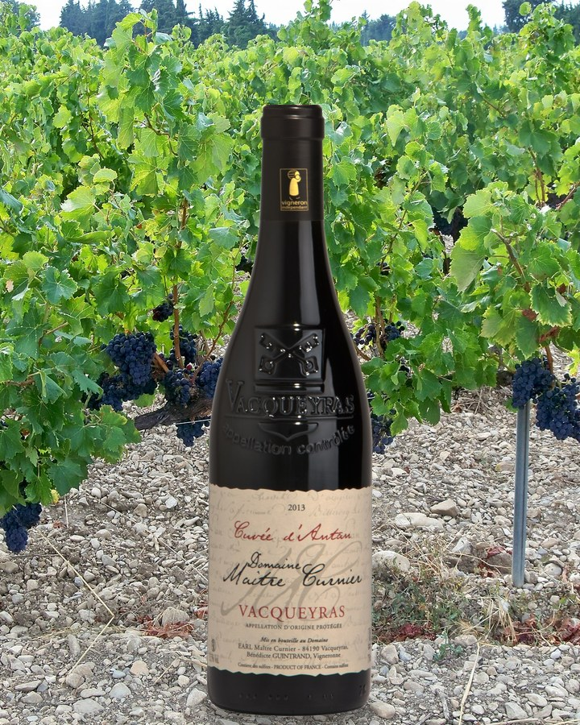
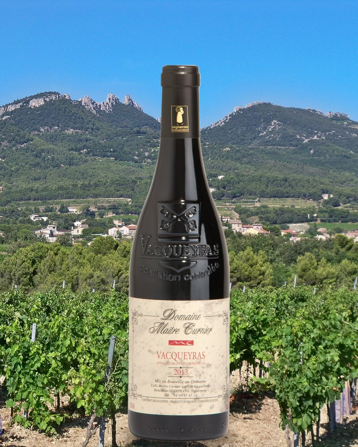
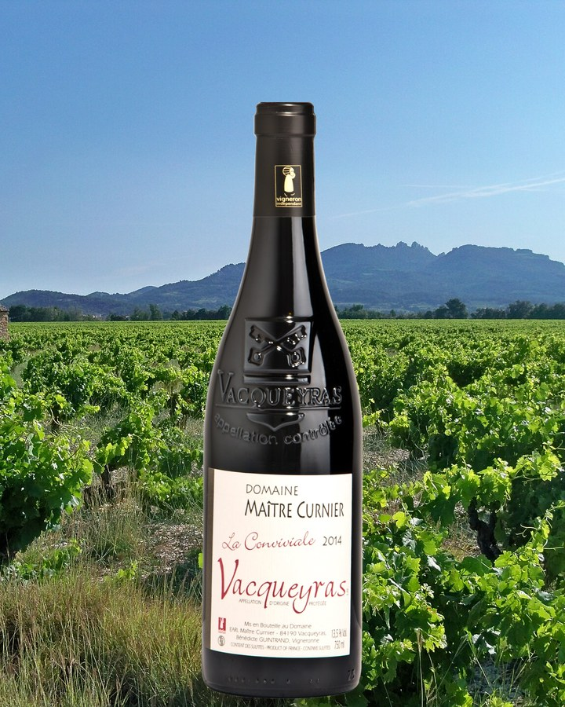
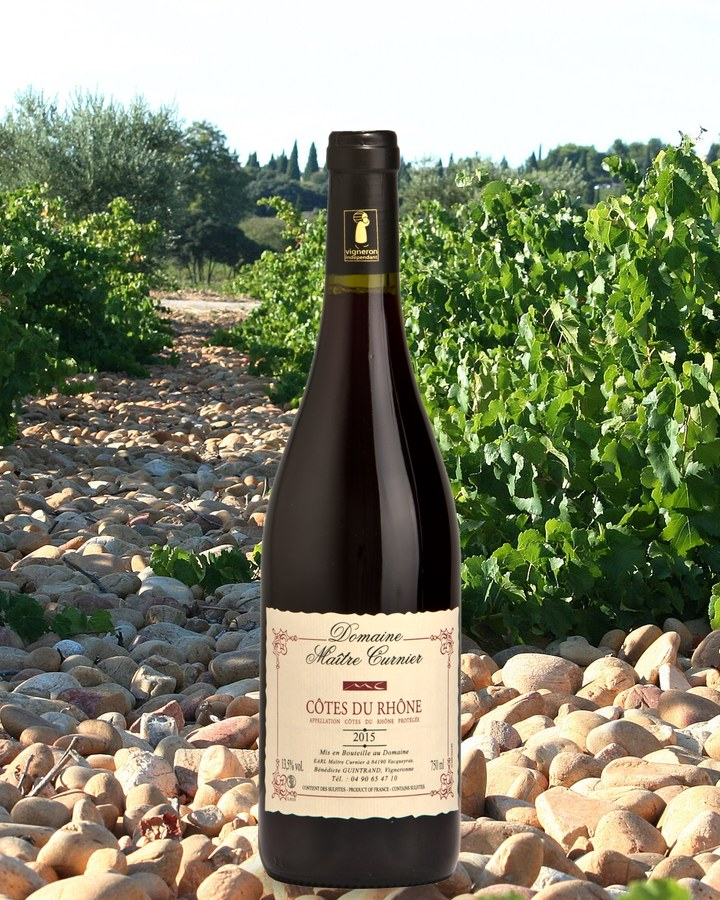
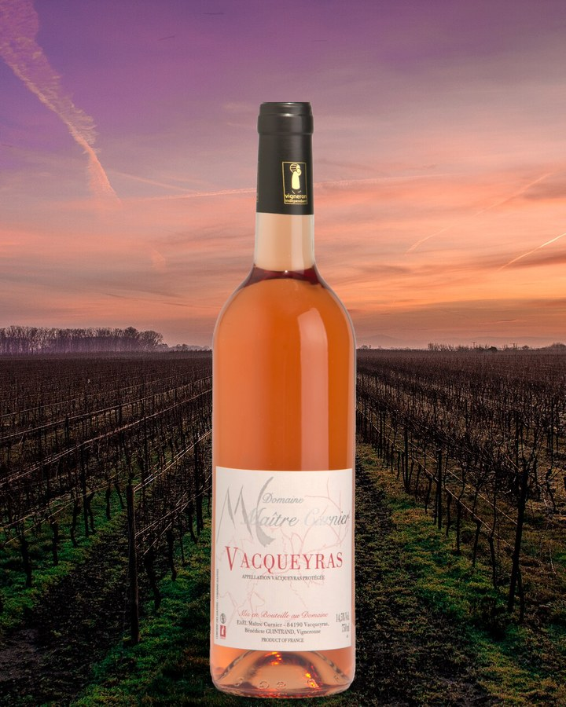
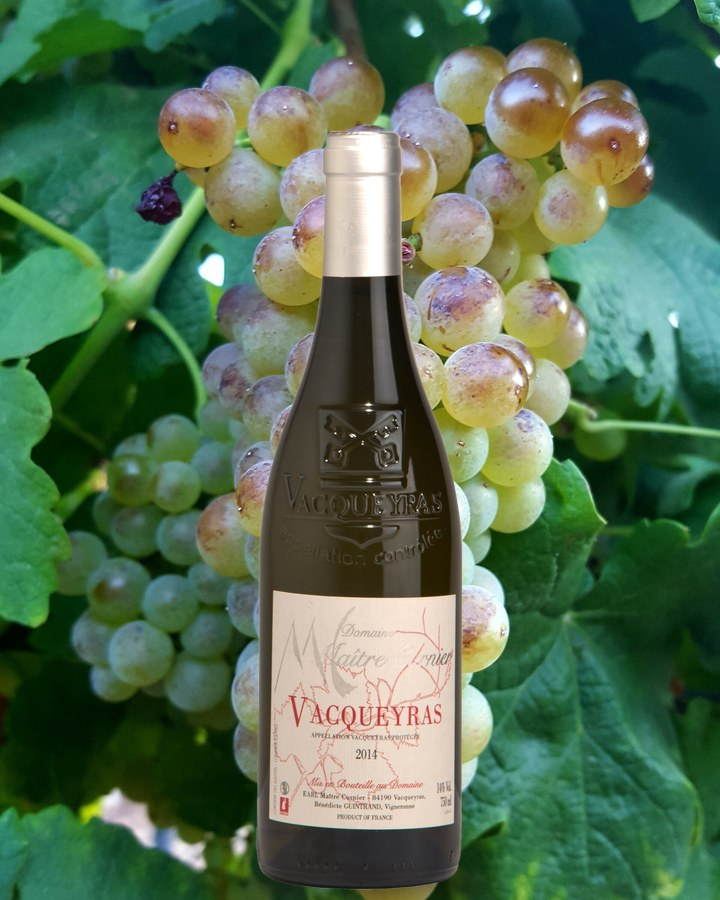
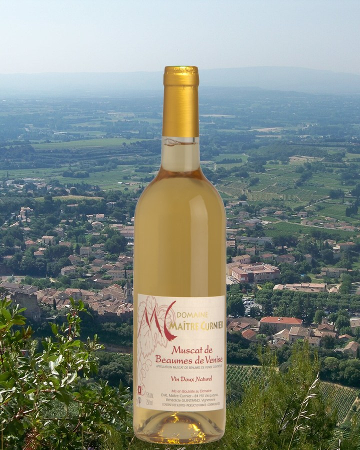
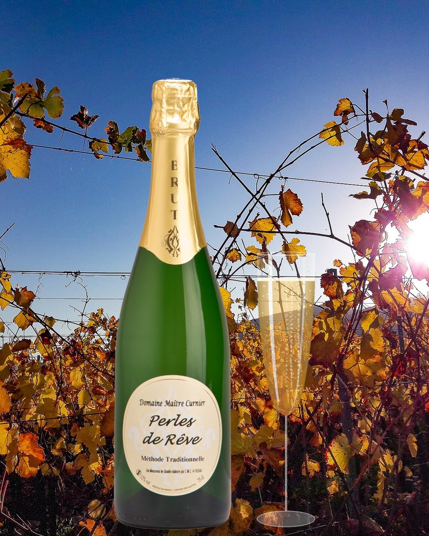

AOP Vacqueyras Rouge — Cuvée d’Antan
Le prestige et la mémoire des vieilles vignes
Vin rouge · 2023Télécharger la fiche (PDF)
Assemblage & terroir
Cépages : 50% Grenache, 50% Syrah.
Vieilles vignes de 50 à 70 ans, qui apportent une concentration naturelle d’une grande rareté.
Vinification & élevage
Vendange manuelle avec tri des grappes saines. Macération de 20 à 25 jours avec délestages quotidiens pour extraire les composants nobles. 10 à 15% du vin est élevé en barriques.
Profil dégustation
Robe profonde grenat intense. Nez puissant et complexe dévoilant des arômes de fruits noirs mûrs, de garrigue, de cuir fin et d’épices douces. La bouche est dense, soyeuse, avec une longueur remarquable.
Service
16°C - 17°C (Déboucher 2h avant)
Garde
Environ 9 ans
Accords mets & vins
- Gibier
- Viande rouge
- Fromage
Gibiers à poil et à plume, pièces de bœuf maturées, daube provençale traditionnelle ou fromages affinés à pâte dure.
AOP Vacqueyras Rouge — Tradition
L’expression classique et généreuse du terroir
Vin rouge · 2024Télécharger la fiche (PDF)
Assemblage & terroir
Cépages : 80% Grenache, 20% Syrah.
Vignes âgées de 15 à 45 ans. Vendange manuelle des grappes saines, partiellement éraflée.
Vinification & élevage
Cuvaison traditionnelle de 20 à 25 jours en cuves béton, avec délestages quotidiens. Fermentation démarrant entre 25 et 27°C et finissant entre 32 et 33°C.
Profil dégustation
Robe rubis soutenue. Nez généreux marqué par les fruits rouges mûrs (framboise, cerise noire) et une touche délicatement poivrée. En bouche, le vin fait preuve d’un superbe équilibre entre matière et fraîcheur.
Service
17°C (Déboucher 2h avant)
Garde
Jusqu’à 8 ans
Accords mets & vins
- Viande rouge
- Grillades
- Fromage
Parfait sur un carré d’agneau aux herbes de Provence, des grillades au feu de bois, un magret de canard ou un plateau de fromages régionaux.
AOP Vacqueyras Rouge — La Conviviale
Souplesse, fruit et gourmandise partagée
Vin rouge · 2025Télécharger la fiche (PDF)
Assemblage & terroir
Cépages : 65% Grenache, 35% Syrah.
Vignes de 4 à 15 ans. Vendange manuelle des grappes saines, 100% éraflée.
Vinification & élevage
Cuvaison de 10 à 14 jours avec remontages quotidiens. Température maîtrisée aux alentours de 26°C afin d’extraire des arômes fruités.
Profil dégustation
Robe rubis brillante. Nez gourmand et expressif de petits fruits rouges frais (fraise des bois, cerise). La bouche est ronde, fluide et très accessible, dotée de tanins souples et croquants.
Service
17°C
Garde
5 ans
Accords mets & vins
- Charcuterie
- Grillades
- Viande rouge
Plats conviviaux, planches de charcuteries fines, rosbif, pizzas artisanales, grillades d’été et buffets champêtres.
AOP Côtes du Rhône Rouge
Le plaisir fruité et épicé au quotidien
Vin rouge · 2025Télécharger la fiche (PDF)
Assemblage & terroir
Cépages : 50% Grenache, 30% Cinsault, 15% Carignan, 5% Mourvèdre.
Vignes de 10 à 60 ans. Vendange manuelle des grappes saines.
Vinification & élevage
Cuvaison de 10 à 14 jours avec remontages quotidiens, à une température d’environ 27°C, pour extraire la couleur et le fruit.
Profil dégustation
Robe rubis brillante. Nez très engageant de mûre, de prunelle et d’épices douces. La bouche est souple, bien fruitée, facile d’accès avec une finale délicatement relevée.
Service
15°C (Déboucher 2h avant)
Garde
Jusqu’à 3 ans
Accords mets & vins
- Charcuterie
- Volaille
Charcuterie artisanale, viandes blanches (poulet rôti, sauté de porc), gratins provençaux et cuisine simple du quotidien.
AOP Vacqueyras Rosé
L’élégance gastronomique d’un grand rosé du Rhône
Vin roséTélécharger la fiche (PDF)
Assemblage & terroir
Cépages : 50% Grenache, 30% Cinsault, 20% Syrah.
Vignes de 4 à 15 ans. Vendange manuelle, uniquement le matin, en début de maturité, des seules grappes saines.
Vinification & élevage
Débourbage du jus, puis fermentation maintenue entre 18 et 20°C en cuves émaillées.
Profil dégustation
Robe très fraîche d’un rose soutenu. Le nez révèle des arômes très intenses de groseille, de grenade et de petits fruits rouges. La bouche est ample, charnue et rafraîchissante.
Service
10°C - 12°C
Garde
À déguster sous 2 ans
Accords mets & vins
- Apéritif
- Poisson
- Cuisine épicée
Idéal à l’apéritif, avec la cuisine provençale (petits farcis, bouillabaisse), les salades estivales composées ou la cuisine asiatique épicée.
AOP Vacqueyras Blanc
Rare, complexe et d’un beau volume en bouche
Vin blanc · 2025Télécharger la fiche (PDF)
Assemblage & terroir
Cépages : 35% Marsanne, 35% Viognier, 30% Clairette.
Vignes de 10 à 12 ans. Vendange manuelle, uniquement le matin, pour préserver la fraîcheur aromatique.
Vinification & élevage
Débourbage, puis fermentation maintenue entre 18 et 20°C en cuve inox.
Profil dégustation
Robe jaune or paille brillante. Nez complexe de fleurs blanches, de pêche de vigne, d’agrumes frais et de chèvrefeuille. Bouche généreuse, dotée d’une texture suave équilibrée par une belle tension minérale.
Service
12°C
Garde
4 ans
Accords mets & vins
- Poisson
- Volaille
- Fromage
Poissons grillés ou en sauce onctueuse, volailles à la crème, risotto aux gambas et fromages de chèvre affinés de la région.
VDN Muscat de Beaumes-de-Venise
Vin Doux Naturel — Nectar aromatique et solaire
Vin doux naturel · 2025Télécharger la fiche (PDF)
Assemblage & terroir
Cépage : 100% Muscat à petits grains.
Vignes de 12 à 15 ans. Vendange manuelle, uniquement le matin, de raisins sains récoltés à surmaturité (15% vol.).
Vinification & élevage
Pressurage dès l’arrivée en cave. Fermentation en cuve avec levures indigènes à basse température (13-14°C), arrêtée par mutage à l’alcool à la densité voulue pour conserver la douceur naturelle du raisin.
Profil dégustation
Robe or liquide aux reflets ambrés. Nez intense d’agrumes confits, de miel de fleur, d’abricot sec et de notes florales. Bouche riche et suave mais préservée de toute lourdeur par une acidité noble.
Service
10°C - 12°C
Garde
5 ans
Accords mets & vins
- Dessert
- Fromage
Foie gras poêlé ou en terrine, melon de Cavaillon, tarte au citron meringuée, desserts aux fruits exotiques et fromages à pâte persillée (Roquefort, Bleu).
Perles de Rêve — Méthode Traditionnelle
Fines bulles festives & vivantes
Boisson pétillanteTélécharger la fiche (PDF)
Élaboration & méthode
Elaboration : Méthode Traditionnelle du domaine.
Seconde fermentation en bouteille suivie d’un élevage sur lattes assurant la finesse de l’effervescence et la complexité des arômes.
Vinification & élevage
Sélection rigoureuse des jus de presse pour garantir vivacité et clarté. Prise de mousse lente en cave fraîche permettant l’obtention de bulles d’une grande délicatesse.
Profil dégustation
Robe or clair brillant animée par de très fines bulles régulières. Nez expressif de pomme fraîche, de brioche légère et de fleurs de verger. La bouche est légère, vivante, agréablement fruitée et désaltérante.
Service
6°C - 8°C
Moment
Apéritif & Fêtes
Accords mets & vins
- Apéritif
- Poisson
- Dessert
Idéal pour les cocktails, les réceptions, les pièces cocktail salées, les toast de saumon ou en accompagnement de desserts légers aux fruits.